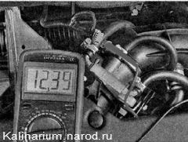
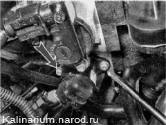
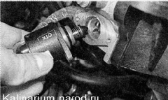
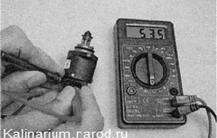
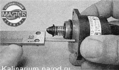
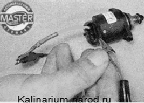

Регулятор холостого хода проверка и заменаПеред выполнением работы ознакомьтесь с мерами предосторожности при ремонте системы управления двигателем Для выполнения работы потребуются: — мультиметр {в режиме вольтметра и омметра); — отрезки проводов. Проверка 1. Подготавливаем автомобиль к выполнению работы 2. Освобождаем фиксатор колодки жгута проводов и отсоединяем колодки от регулятора холостого хода. 3. Подсоединяем «минусовой» щуп вольтметра к «массе» двигателя. 4. Включив зажигание, вольтметром измеряем напряжение на выводах А и D колодки жгута проводов (обозначения выводов нанесены на колодке). Напряжение должно быть не меньше 12 В. Если напряжение не поступает на колодку или оно меньше 12В, значит, разряжена аккумуляторная батарея, неисправна цепь питания или неисправен ЭБУ. По окончании измерения напряжения выключайте зажигание. Снятие 1. Крестовой отверткой отворачиваем два винта крепления pегулятора холостого хода к корпусу дроссельной заслонки. 
2. Снимаем регулятор холостого хода. 
3. Омметром измеряем сопротивление между выводами обмоток.  Электрическое сопротивление между выводами А—В и C—D должно быть около 53 Ом. Сопротивление между выводами А-Си B-D должно быть большим (стремиться к бесконечности). Неисправный регулятор необходимо заменить Установка Перед установкой нового регулятора необходимо убедиться, что игла клапана выступает не более чем на 23 мм. 1. Штангенциркулем с глубиномером измеряем выступание иглы нового клапана. 
2. Если выступание клапана более 23 мм, утапливаем клапан в корпус следующим образом: а) проводом соединяем положительный вывод аккумуляторной батареи с выводом D регулятора (соединение провода с выводом должно быть заизолировано); б) оголенным концом провода, соединенным с отрицательным выводом аккумуляторной батареи, кратковременно касаемся вывода С колодки жгута. Поскольку, клапан движется очень медленно, касания выполняем многократно, воспроизводя работу импульсного источника питания. 3. Внешним осмотром проверяем состояние уплотнительного кольца. Поврежденное кольцо заменяем. 4. Устанавливаем регулятор в последовательности обратной снятию. |